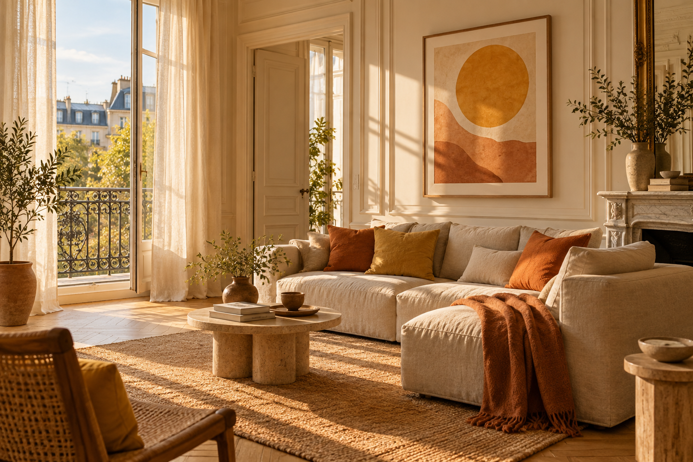

Une signature solaire
Une présentation soignée, une touche de décoration et une page dédiée pour raconter ce qui rend votre bien unique.
Des lieux chaleureux, des séjours qui comptent. Nous préparons une collection de logements singuliers et accompagnons leurs propriétaires au quotidien.
Parlons de votre logementNous rencontrons nos premiers propriétaires.

Nous réunissons l’attention portée au lieu, l’expérience du voyageur et le suivi de votre location dans une même approche.
Une présentation soignée, une touche de décoration et une page dédiée pour raconter ce qui rend votre bien unique.
Un guide accessible par QR code pour découvrir les alentours, des informations utiles et un contact pour accompagner le séjour.
Organisation des arrivées et départs, coordination du ménage et suivi du logement, selon le périmètre convenu ensemble.
Nous examinons votre fonctionnement, les retours voyageurs et les possibilités de réservation directe pour construire un accompagnement adapté.
Nous étudions le logement, ses contraintes et ses charges pour comparer les revenus nets de différents scénarios.
Chaque bien fait l’objet d’une étude. Le périmètre, les coûts d’installation et les conditions de gestion sont précisés avant tout engagement.
Des logements accueillants et bien entretenus, à Toulouse et dans les environs. Nous étudions chaque opportunité, avec une attention particulière aux grands appartements et aux maisons.
Une proposition précise est établie après l’étude du bien. Elle distingue la mise en place, la gestion et les frais éventuels des plateformes, du paiement et du ménage.
Vos périodes d’occupation personnelle sont intégrées à l’étude. Le calendrier et les conditions de disponibilité sont définis ensemble.
Nous construisons des scénarios à partir du bien et des données disponibles. Le revenu dépend notamment de la demande, de la saison et des périodes ouvertes à la location.
Quelques informations suffisent pour commencer à parler de votre projet.
Contact : kevin.dolie@solayia.fr